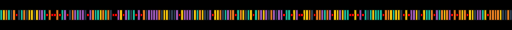

At the end of this blog post, we'll know how to simulate and render pretty cellular automata such as these:

and the really cool algebraic structure that these possess! They turn out to be the dual of a monad, known as a comonad.
First, our magic incantations:
{-# LANGUAGE RecordWildCards #-}
{-# LANGUAGE NoMonomorphismRestriction #-}
{-# LANGUAGE FlexibleContexts #-}
{-# LANGUAGE TypeFamilies #-}
{-# LANGUAGE PartialTypeSignatures #-}
module Main where
-- import qualified Data.Vector as V
import Control.Monad
import Data.List(intercalate)
import Data.Monoid (Any)
import Diagrams.Prelude hiding (after)
import Diagrams.TwoD.Layout.Grid
import Diagrams.Core.Compile
import Diagrams.Core.Types
import Diagrams.Backend.CmdLine
import Diagrams.Backend.Cairo.CmdLine
import Diagrams.Backend.Cairo
import Diagrams.TwoD
import System.RandomThis simulation uses the Comonad typeclass to model cellular automata. There are multiple ways of looking at this algebra, and one way to think of them is a structure that can automatically convert "global-to-local" transforms into "global-to-global" transforms.
For example, in a cellular automata, the "global-to-local" transformation is updating the state of one Cell by reading the cell's neighbours. The neighbour state is the global state, which is used to update the local state of the cell. This can be thought of as the type
CA -> Cellwhere CA is the state of the full cellular automata universe, and Cell is the new state of a cell. However, the question that immediately arises is -- which cell? the answer is that, the CA not only encodes the state of the cellular automata, but also a focused cell which is updated.
However, this seems ridiculous, since we have simply added extra complexity (that of focusing on a particular cell) with zero gains in benefit.
The nice part of a Comonad is that if we have a structure that knows how to do a "focused update", the Comonad enables us to extend this to the entire structure. It is called cobind:
```haskell
cobind :: CA -> (CA -> Cell) -> CA
```If we think of grid as a container of cells (or as a functor w), this gives us the new type
```haskell
cobind :: CA -> (CA -> Cell) -> CA
```replace CA with w Cell:
```haskell
cobind :: w Cell -> (w Cell -> Cell) -> w Cell
```replace Cell with a:
```haskell
cobind :: w a -> (w a -> a) -> w a
```generalize type even further, by allowing the output type to differ:
```haskell
cobind :: w a -> (w a -> b) -> w b
```Note that this rewrite exploited the fact that a Grid is simply a functor (collection) of Cells, and then used this to rewrite the type signature.
The type signature
```haskell
cobind :: w a -> (w a -> b) -> w b
```can be sharply contrasted with the monadic >>= (bind) as
```haskell
>>= :: m a -> (a -> m b) -> m b
```So this is the "dual" of >>= (hence we use w instead of m). In haskell code, this appears as:
class Functor w => Comonad w where
extract :: w a -> a
duplicate :: w a -> w (w a)
cobind :: (w a -> b) -> w a -> w b
cobind f = fmap f . duplicatewith the interpretation that it takes a global structure w a which is focused on some a in the w a, and then takes a transform that updates the focused a in the w a to a b. Given these two pieces of information, the Comonad automatically updates every single a, to produce an updated w b.
The particular data structure that implements comonad for modelling our cellular automata is known as a RingZipper. This is a data structure that provides us access to a circular arrangement of elements, with one particular element that's currently focused. Concretely, it looks like:
data RingZipper a = RingZipper {
rzvals :: [a], rzix :: Int
} deriving(Eq, Ord)
instance Functor RingZipper where
fmap f rz = RingZipper {
rzvals = fmap f (rzvals rz),
rzix = rzix rz
}
We're going to imagine that this already has a Comonad instance, and we're simply waiting to write rules for this. So, the rules we want to write are these:
Int.data Cell = Cell { cv :: Int }Our full simulation, called as CA since it's our cellular automata consists of these cells arranged in a circular universe.
type CA = RingZipper CellstepCell takes as input a CA, which remember is a circular universe that is focused at a given location, and then tells us how to produce the next focused cell.
-- | Number of colors
cyclic1dTypes :: Int;
cyclic1dTypes = 4-- | Update rule
stepCell :: CA -> Cell
stepCell ca = cell'
where
cell = extract ca -- extract current cell
-- | if we have a neighbour of the adjacent color,
cell' = if hasNextNeighbour ca
-- | Then become that color
then Cell { cv = (cv cell + 1) `mod` cyclic1dTypes }
-- | Otherwise, remain the same
else cell
-- | extract left and right neighbour from a cell.
neighbours :: CA -> [Cell]
neighbours ca = [extract $ shiftLeft ca, extract $ shiftRight ca]-- | Check if any neighbour has value that is next
-- to ours
hasNextNeighbour CA -> Bool
hasNextNeighbour ca =
let nextTy = ((cv cell) + 1) `mod` cyclic1dTypes
in any (\c -> cv c == nextTy)
(neighbours ca)The ring zipper structure is given by:
makeRingZipperM :: Monad m => Int -> m a -> m (RingZipper a)
makeRingZipperM n f = do
vals <- replicateM n f
return $ RingZipper {
rzvals=vals,
rzix=0
}shiftLeft :: RingZipper a -> RingZipper a
shiftLeft (RingZipper rzvals rzix) =
RingZipper rzvals ((rzix - 1) `mod` (length rzvals))
shiftRight :: RingZipper a -> RingZipper a
shiftRight (RingZipper rzvals rzix) =
RingZipper rzvals ((rzix + 1) `mod` (length rzvals))
instance Comonad RingZipper where
extract rz = (rzvals rz) !! (rzix rz)
duplicate (RingZipper rzvals rzix) = RingZipper {
rzvals = [RingZipper rzvals i | i <- [0..(length rzvals)-1]],
rzix = rzix
}This is the part that interfaces with the diagrams library to draw these cellular automata.
We first declare that we are using the Cairo library to perform rendering.
type MyBackend = CairoGiven a CA to draw, we draw each cell with renderCell, and then we concatenate all the cells with (|||).
renderCA :: CA -> QDiagram MyBackend V2 (N MyBackend) Any
renderCA rz = foldr1 (|||) (map renderCell $ (rzvals rz))renderCell draws thin rectangles for each cells (width=1, height=4) with different colors chosen from a palette.
renderCell :: Cell -> QDiagram MyBackend V2 Double Any
renderCell Cell{cv=0, ..} = (rect 1 4# fc (sRGB24read "#1abc9c"))
renderCell Cell{cv=1, ..} = (rect 1 4 # fc (sRGB24read "#f1c40f"))
renderCell Cell{cv=2, ..} = (rect 1 4 # fc (sRGB24read "#e67e22"))
renderCell Cell{cv=3, ..} = (rect 1 4 # fc (sRGB24read "#9b59b6"))
renderCell Cell{cv=4, ..} = (rect 1 4 # fc (sRGB24read "#2c3e50"))
renderCell Cell{..} = square 1 # fc (sRGB f (1.0 - f) 0.0) where
f = (fromIntegral cv / fromIntegral cyclic1dTypes)Given a CA, to render a GIF, we create next states by iterating cobind stepCell. We then invoke the diagram's API to create a list of rendered steps by mapping renderCA over the steps.
type GifDelay = Int
renderGif :: CA -> Int -> [(QDiagram MyBackend V2 (N MyBackend) Any, GifDelay)]
renderGif ca n = zip renderedSteps [5..] where
renderedSteps = map renderCA cas
cas = take n $ iterate (cobind stepCell) caFinally, to setup our starting board, we generate a random cell with mkCell, and create a random CA by making random cells at mkCA.
cyclic1dDim = 200
mkCell :: IO Cell
mkCell = do
newStdGen
val <- getStdRandom (randomR (0, cyclic1dTypes)) :: IO Int
return $ Cell val
mkCA :: IO (CA)
mkCA = do
rz <- makeRingZipperM cyclic1dDim mkCell
return $ rzWe put everything together; we create a new CA with mkCA, create the gif with renderGif, and finally pass our GIF to diagrams with gifMain.
main :: IO ()
main = do
start <- mkCA
let nsteps = 100
gifMain $ (renderGif start nsteps)To run the executable and produce the gif, clone the repo bollu/koans, enter into the cellular folder and run with:
koans/cellular$ cabal build
koans/cellular$ cabal exec cellular -- -w1024 -h400 -o cellular.gif